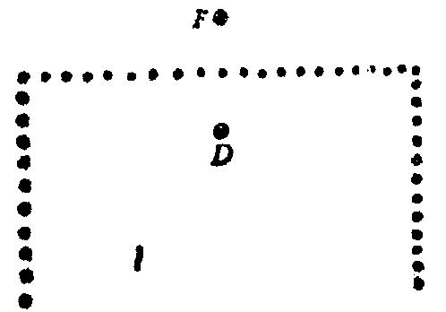

(3)根据希腊传说，分析方法的发现乃归功于柏拉图。这传说可能并不十
分可靠，但无论如何，如果此法并非柏拉图所发明，也必定有某个希腊学者认
为必须将其发明归诸一位哲学天才。
毫无疑问，这个方法有某些发人深思之处。不照直走一条通往目标的道路，
而是从目标走开，转过头来倒着干，这一方法有某种心理障碍。当我们发现合
适的操作步骤后，我们必须在心里恰恰按照相反的次序去进行。对于这种反顺
序，有某种心理上的嫌恶，如果我们不是小心翼翼提出来的话，它可能阻止一
个很能干的学生去了解这种方法。
但是用倒着干的方法去解决一个具体问题不需要天才；任何有点常识的人
都能做到。我们集中注意力于所求目标，我们设想我们所乐意达到的最后位置。
前面是哪个位置，我们才能达到那里呢?问这个问题是很自然的，而这样提问时，
我们就是倒着干。十分原始的问题可以很自然地引导我们倒着干(见“帕扑斯”
一节，第4点)。
倒着于是一种属于常识范围的做法，每个人都办得到，而且我们几乎不怀
疑，在柏拉图之前的数学家或非数学家也曾使用过这种方法。曾被某个希腊学
者看成是堪与柏拉图天才相媲美的成就的是：用一般术语叙述这种做法并且声
称它是在解决数学和非数学题时典型有用的一种操作。
(4)现在，我们转到心理实验上——如果，话题从柏拉图转到狗、鸡和黑
猩猩上并不太唐突的话。如图30所示，一个篱笆围成正方形的三边而第四边是
敞开的。我们把一只狗放在篱笆的一边的点 D 上，而把某种食物放在另一边的点
F上。对狗来说，问题颇为容易。它可能首先冲过去，好象要直接扑到食物上，
但是，接着它便很快地转过身来，匆忙地绕过篱笆的端点，沿一条圆滑曲线毫
不犹豫地跑到食物那里。然而，有时，特别当点 D 和点F相距甚近时，求解就不
那么顺当；这狗要先花点时间向篱笆叫呀，抓呀，扑呀，然后才“想到”转过
身去这一个“好念头”(我们暂且姑妄言之)。
图30
把各种各样的动物放在狗的位置上，然后比较它们的行为是饶有趣味的。
这个问题对于一个黑猩猩或者一个四岁儿童来说很容易(对于儿童，放上食物不
如放上玩具更有吸引力)。可是对于一只鸡来说，这个问题则惊人地困难。鸡会
激动地在篱笆的这一边转来转去，如果它终于会走到食物那里的话，也会在这
之前花费相当多的时间。在许多奔跑之后，它偶然可能成功。